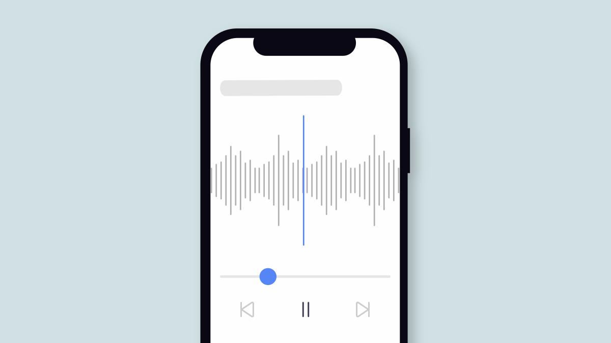
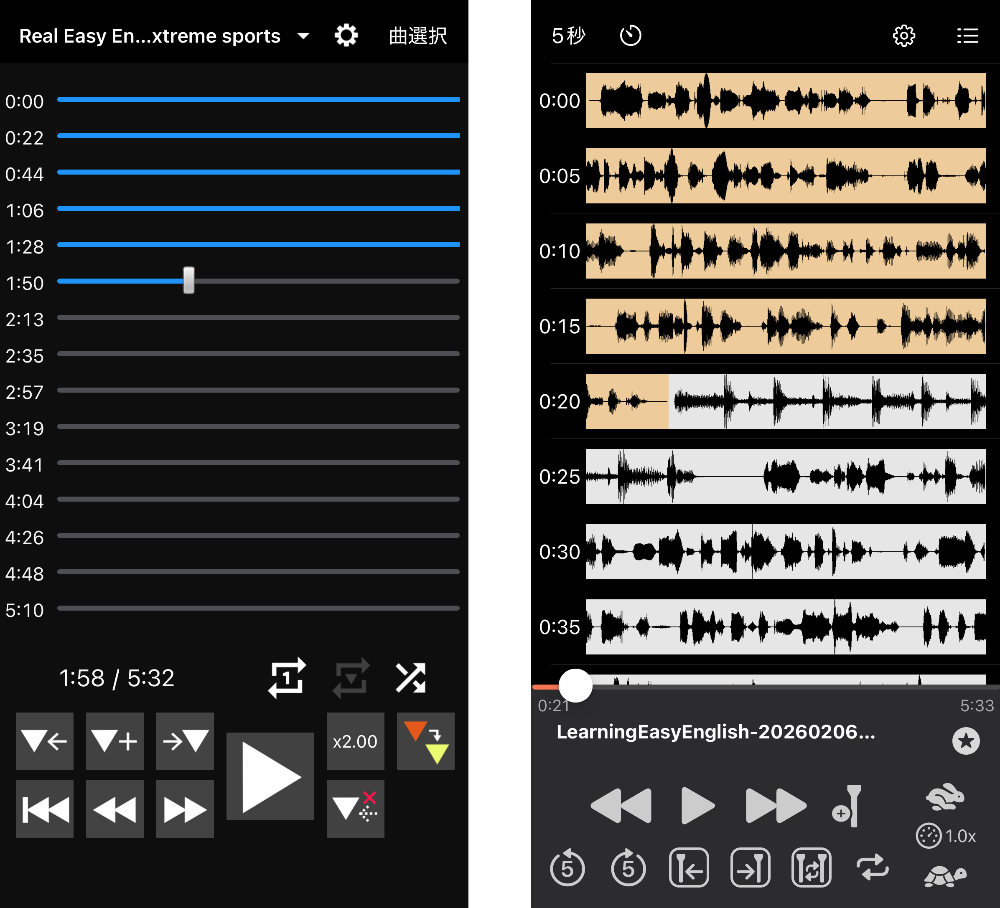

2026年4月20日
Sailerは語学プレーヤーに最適です。
Sailerは語学学習を趣味としている筆者が、語学学習用の音声コンテンツの再生に適したiPhone向けの音声プレーヤーアプリがないと気づき、それならばと自分で作ることにしたアプリです。
そのため語学学習用途の音声プレーヤーとして必要な主要な機能を一通り備えています。再生速度の調整はもちろんのこと、特定の区間だけを再生・ループしたり、任意の位置にマーカーを作成することもできます。
たとえば、言語学習者向けのラジオ番組やPodcastにはよく放送回ごとにスキットとかダイアローグとか呼ばれる会話部分が含まれていて、そのあとに語彙とか文法の解説が続くのが定番です。そのスキットの開始場所にマーカーを作成しておけば、1回ボタンをタップするだけでそこだけ繰り返し聞けますし、次回再生時もすぐにスキット部分に移動できるわけです。
しかし、こうした機能があるというだけなら既に他にもいくつかの優秀なアプリが存在します。語学学習によく使われているのはAudipoやRepeteでしょうか。私もSailerを開発する前はよくAudipoを使っていました。

縦に長いシークバーが特徴で、比較的長時間の音声の再生に適している。
こうしたアプリは上述の機能を一部あるいは全て備えていて、十分に思われるのですが、語学学習用プレーヤーとしてはどうしてもフラストレーションが溜まる点がありました。
それは「正確なシーク（再生位置の調整）のしづらさ」です。
たとえば、リスニングの最中に「いまなんて言った？」と思ったとき、「ほんの少し前」に戻りたいということは頻繁にありますよね。あるいは、音声を聞きながら「ここにマーカーを打ちたい！」と思っても、マーカーボタンを探している間に「僅かに」時間が経ちますよね。だから一度再生を止めて、その「僅かな」時間戻るという操作が必要なわけです。
これをシークバーで行うのは至難の業です。Audipoは縦に並んだ長いシークバーが特徴で、比較的長時間の音声の再生に適していますが、それでも秒単位で動かすには指をミリ単位で動かすことが要求されます。指でシークバーが隠れてしまうという問題もあります。
早戻し（巻き戻し）ボタンという手もあります。NHKの語学プレーヤーでは早戻しの秒数を2秒、4秒、8秒......とかなり細かく設定できます。しかし実際には、どれくらい戻りたいかはそのつど違いますし、もっと言えば、所詮その程度の細かさでしか調整できないのです。聞き返したいフレーズの前に1秒でも余分な音声が入っていると、それを何度も繰り返す場合、フラストレーションが溜まっていきます。本当に聞き取りたい箇所に集中できないのです。
もっとピンポイントで聞きたい場所に移動する方法はないのか。それも直感的に。
Sailerがこの問題に対して出した答えが、インタラクティブな音声波形画面です。波形を左右にスクロールすることで再生位置を変えられる仕組みにしたわけです。もうシークバーで神経を使う必要はありません。早戻しボタンはどこだと探す必要もありません。まるでDJがターンテーブル上でレコードを回すように、スクロールで直感的に聞きたい場所に移動できるようになりました。
再生中でもスクロールが可能。波形の拡大率も調整可能。
波形はピンチ操作で拡大・縮小ができますから、単語レベルで繰り返したいときは拡大しておいて、文レベルで繰り返したいときは少し縮小しておけば、ちょうど自分の指の動かしやすい幅に聞きたい範囲が収まるよう調整できるわけです。慣れれば画面を見なくても、だいたい思い通りの位置に早戻しができるようになります。（ピンとこない方、実際に使ってみてください。わかるはずです！）
考えてみれば、スマートフォンにはタッチ操作という強力な武器があります。音声プレーヤーのUIにも、それを活かさない手はありません。Sailerはその発想を徹底していて、ダブルタップで再生範囲を指定したり、マーカーをドラッグで移動したりと、インタラクティブな波形というコンセプトをさまざまな形で活用しています。
おかげで、私自身のリスニング体験も劇的に向上しました。この操作感になれると、外国語のコンテンツを他の音声プレーヤーで再生する気になれません。
語学学習に使える音声プレーヤーをお探しの方、ぜひ使ってみてください。気に入ってくださったら、アプリの評価をしていただけるとなお嬉しいです。